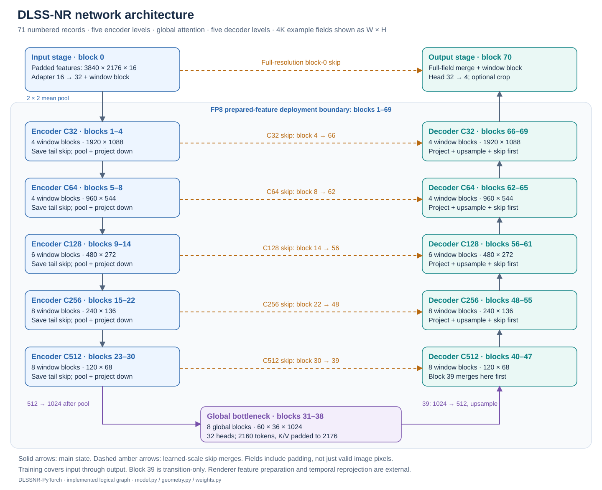

Begin with one kernel and finish with a reconstruction
DLSS-NR is an encoder–decoder with local window attention, a global-attention bottleneck, and residual connections. Choose the model operation below. Each precision-specific entry has its own complete lesson: architecture and equations, a simple correctness oracle, thread and lane ownership, byte-address derivations, incremental implementation, storage lifetimes, numerical details, optimization tradeoffs, reconstruction steps and targeted checks.
You do not need to read a family chapter first. Prerequisites are repeated inside each lesson so that the entire reasoning fits into one linear reading session. Template specializations get separate pages because width, precision and boundary mode change the contract even when they share a CUDA body.

Choose an operator, variant, and channel width
The catalog follows operator type → variant → channels. FP16 and FP8 lessons sit together under each role. Fused kernels appear once under their complete operation; downsampling and upsampling entries include any fused transformer work described in their variant.
If you want a small complete transformer first, start with the ordinary FP16 C32 window block. For an addressing-only exercise, start with the FP16 spatial-to-token repack. Every other page stands on its own.
FFN 12 lessons
Feed-forward channel mixing: grouped MLPs, dense bottleneck matrices, and postmix projections.
Grouped FFN: dense premix + eight 64→256→64 MLPs
C512
- Native tiled input
window_ffn_c512 - Channel-plane input
window_ffn_input_view_c512
Dense postmix + scaled residual
C512
- Native tiled residual
window_ffn_projection_c512 - Channel-plane residual
window_ffn_projection_input_view_c512
Dense bottleneck FFN
C1024 → C4096 → C1024
- Expansion: C1024 → C4096 + activation
global_ffn_expand_c1024 - Contraction: C4096 → C1024 + residual
global_ffn_contract_c1024
Attention 12 lessons
Window and global attention, plus their separately launched QKV and output projections.
Window attention: fused QKV + attention
C512 · 16 heads × 32 channels
- QKV, normalization, window scores and weighted values
window_qkv_c512
Window attention: output projection + residual
C512
- Native tiled output
window_attention_projection_c512 - Channel-plane output
window_attention_projection_output_view_c512
Global attention: output projection + residual
C1024
- Dense output projection
global_projection_c1024
Global attention: QKV projection
C1024 · 32 heads × 32 channels
- QKV projection, normalization and V transpose
global_qkv_c1024
Global attention: streamed queries / keys / values
C1024 · 32 heads × 32 channels
- Streamed global attention
global_attention_chained_c1024
Fused FFN + attention 24 lessons
Complete local transformer blocks. Their FFN and attention stages share one kernel.
Full-input branched FFN + window attention
C64
- Native tiled input / output
window_block_c64 - Channel-plane input
window_block_c64_input_view - Channel-plane output
window_block_c64_output_view
C128
- Native tiled input / output
window_block_c128 - Channel-plane input
window_block_c128_input_view - Channel-plane output
window_block_c128_output_view
C256
- Native tiled input / output
window_block_c256 - Channel-plane input
window_block_c256_input_view - Channel-plane output
window_block_c256_output_view
Dense FFN + window attention
C32
- Native tiled input / output
window_block_c32 - Channel-plane input
window_block_c32_input_view - Channel-plane output
window_block_c32_output_view
Downsampling 14 lessons
Encoder transitions: fused blocks, pooling, and the following channel expansion.
Input preprocessing + window block + pooling
C32 → pooled C32
- Prepare features, save full-resolution output and pool
input_preprocess_window_downsample_c32
Window block + 2×2 pooling + channel projection
C32 → C64
- Save skip and downsample
window_block_c32_downsample
C64 → C128
- Save skip and downsample
window_block_c64_downsample
C128 → C256
- Save skip and downsample
window_block_c128_downsample
C256 → C512
- Save skip and downsample
window_block_c256_downsample
Window attention projection + 2×2 pooling
C512 → pooled C512
- Save skip and pool raw projection output
window_attention_projection_pool_c512
Channel expansion after pooling
C512 → C1024
- Pointwise channel projection; spatial pooling is the preceding kernel
channel_projection_c512_to_c1024
Upsampling 10 lessons
Decoder transitions: channel projection, spatial repetition, and skip merging.
Projection + skip merge + window block
C64 → C32
- Upsample and transform
window_block_c32_upsample
C128 → C64
- Upsample and transform
window_block_c64_upsample
C256 → C128
- Upsample and transform
window_block_c128_upsample
C512 → C256
- Upsample and transform
window_block_c256_upsample
Dense projection + nearest repetition + skip merge
C1024 → C512
- Bottleneck-to-decoder transition
decoder_upsample_c1024_to_c512
Input / output processing 4 lessons
Renderer-feature preparation and final image composition around the C32 transformer.
Input features + fused window block
C32
- Renderer input adapter and transformer
input_preprocess_window_c32
Output merge + fused window block + image composition
C32
- Final head, history blend and surface output
output_window_postprocess_c32
Layout conversion 4 lessons
Packed-word permutations between spatial tiles and the global token sequence.
Token sequence → spatial tiles
C1024
- Inverse repack
repack_1d_to_2d_c1024
Spatial tiles → token sequence
C1024
- Forward repack, including token padding
repack_2d_to_1d_c1024
Scheduling 1 lessons
Control-state initialization for dependent split-reduction launches.
Completion-counter initialization
Channel-independent · int32 counters
- Clear split-progress counters
completion_counter_clear
No matching kernels. Try an operator, variant, channel width, or public entry name.
How to use a lesson
Read it in order once. Then implement its scalar oracle, check one worked address by hand, reconstruct the lane map, and add each optimized stage while preserving the numerical boundaries. Source excerpts sit beside the relevant derivation; the complete source and launch record are at the end. Diagrams distinguish global allocations, hardware-managed caches, explicitly indexed shared memory, register fragments and compute. Wide figures scroll horizontally rather than shrinking their labels.
The teaching progression is inspired by the MMA matmul tutorial at spatters.ca: establish the problem, derive ownership and addressing, then explain why an optimization follows. All kernel details, diagrams, formulas and code excerpts here are based on this repository’s implementation.
Optional references and provenance
The source atlas maps all public names to their owning definitions and lessons. The tensor/lane primer, host scheduling reference and architecture companion provide broader context. Existing family overviews remain at their original URLs for reference; the catalog above is the primary reading path.
This is a source explanation at the pinned revision, not a new GPU benchmark or correctness certification. Hardware cache residence, allocated register counts, spills and speedups require measurement. The manifest records every kernel lesson, source dependency, excerpt range and source-file hash. Regenerate with python tools/build_kernel_docs.py; check with python tools/validate_kernel_docs.py.